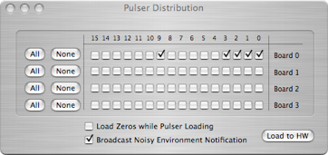
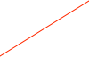

Pulser Distribution System


The Pulser Distribution System (PDS) routes pulser signals from a pulser to the channels that are enabled.
Enables the channels that the PDS will route pulser signals to (can be All, None, or individually selected).
Load the PDS mask out to the hardware

Disable all channels when pulser changes to prevent noise from being induced.
Optional record inserted into the data stream when PDS is loaded.